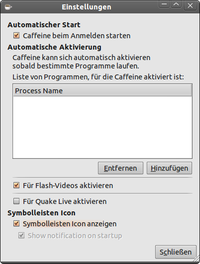
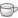

Caffeine
Dieser Artikel wurde für die folgenden Ubuntu-Versionen getestet:
Ubuntu 16.04 Xenial Xerus
Ubuntu 14.04 Trusty Tahr
Zum Verständnis dieses Artikels sind folgende Seiten hilfreich:
Caffeine  (nicht Kaffeine) ist ein Programm, das die Energiespar-Einstellungen manipulieren kann. So kann verhindert werden, dass während einer Präsentation oder einer Video- bzw. TV-Wiedergabe der GNOME-Bildschirmschoner aktiv wird. Das ursprünglich für Mac OS X entwickelte Programm wurde mit Hilfe von Python auf Linux portiert.
(nicht Kaffeine) ist ein Programm, das die Energiespar-Einstellungen manipulieren kann. So kann verhindert werden, dass während einer Präsentation oder einer Video- bzw. TV-Wiedergabe der GNOME-Bildschirmschoner aktiv wird. Das ursprünglich für Mac OS X entwickelte Programm wurde mit Hilfe von Python auf Linux portiert.
Ab Dezember 2013 kümmert sich ein neuer Betreuer um die Weiterentwicklung von Caffeine. Ergebnis ist die Version 2.5 oder neuer. Die früher berücksichtige Wiedergabe von Flash-Videos ist in dieser Version nicht mehr enthalten.
Scheitert die Nutzung, weil man beispielsweise eine andere Desktop-Umgebung verwendet, dann hilft u.U. der Abschnitt zum X-Server im Artikel Bildschirmschoner weiter.
Installation¶
Caffeine kann ab Ubuntu 16.04 über das folgende Paket installiert werden [1]:
caffeine (universe)
 mit apturl
mit apturl
Paketliste zum Kopieren:
sudo apt-get install caffeine
sudo aptitude install caffeine
Bei älteren Ubuntu-Versionen kann man ein "Personal Package Archiv" (PPA) [2] nutzen.
PPA¶
Adresszeile zum Hinzufügen des PPAs:
ppa:caffeine-developers/ppa
Hinweis!
Zusätzliche Fremdquellen können das System gefährden.
Ein PPA unterstützt nicht zwangsläufig alle Ubuntu-Versionen. Weitere Informationen sind der  PPA-Beschreibung des Eigentümers/Teams caffeine-developers zu entnehmen.
PPA-Beschreibung des Eigentümers/Teams caffeine-developers zu entnehmen.
Damit Pakete aus dem PPA genutzt werden können, müssen die Paketquellen neu eingelesen werden.
Nach dem Aktualisieren der Paketquellen erfolgt die Installation wie oben angegeben.
Verwendung¶
 Nach Abschluss der Installation findet man bei Ubuntu-Varianten mit einem Anwendungsmenü unter "Zubehör -> Caffeine" einen entsprechenden Programmstarter [3]. Startet man das Programm, erscheint im Benachrichtigungsfeld das Programm-Logo (eine Kaffeetasse). Solange die Tasse leer  ist, ist Caffeine nicht aktiv. Ist sie gefüllt , werden Stromsparmechanismen unterdrückt. Soll das Programm aktiv werden, klickt man auf das Symbol.
Einstellungen¶
Über den Einstellungsdialog, den man mit einem Rechtsklick  auf das Symbol erreicht, kann man die Verwendung von Caffeine automatisieren. So kann man Caffeine automatisch dann aktiv werden lassen, wenn ein bestimmtes Programm gestartet oder ein Flash-Video abgespielt wird. Den erforderlichen Prozessnamen erfährt man über den Befehl ps. Außerdem kann man einstellen, dass Caffeine beim Hochfahren des Rechners automatisch gestartet wird.
auf das Symbol erreicht, kann man die Verwendung von Caffeine automatisieren. So kann man Caffeine automatisch dann aktiv werden lassen, wenn ein bestimmtes Programm gestartet oder ein Flash-Video abgespielt wird. Den erforderlichen Prozessnamen erfährt man über den Befehl ps. Außerdem kann man einstellen, dass Caffeine beim Hochfahren des Rechners automatisch gestartet wird.
Problembehebung¶
Sollte das Programm nicht starten (überwiegend unter KDE aufgetreten), fehlen in den meisten Fällen folgende Pakete:
gir1.2-appindicator3-0.1
gir1.2-notify-0.7
mit apturl
Paketliste zum Kopieren:
sudo apt-get install gir1.2-appindicator3-0.1 gir1.2-notify-0.7
sudo aptitude install gir1.2-appindicator3-0.1 gir1.2-notify-0.7
 - Blogbeitrag, 04/2010
- Blogbeitrag, 04/2010- Erstellt mit Inyoka
-
 2004 – 2017 ubuntuusers.de • Einige Rechte vorbehalten
2004 – 2017 ubuntuusers.de • Einige Rechte vorbehalten
Lizenz • Kontakt • Datenschutz • Impressum • Serverstatus -
Serverhousing gespendet von